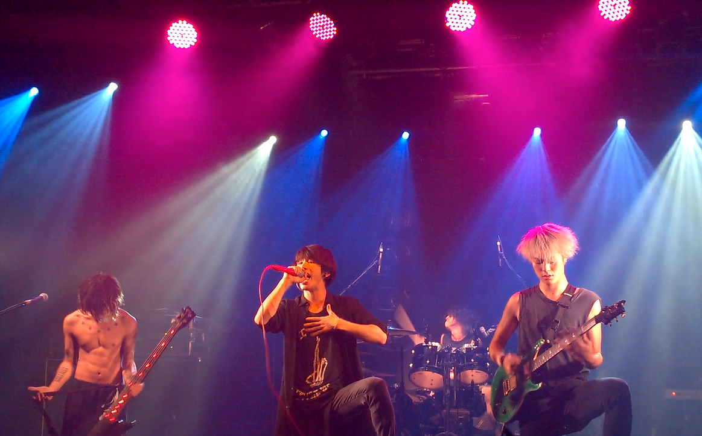

Objetivo de la página
Mostrar información relevante de los miembros de la banda así como noticias actualizadas.
ONE OK ROCKSitio web para fans
Somos ONE OK ROCK, una banda japonesa de rock formada en 2005 y actualmente compuesta por cuatro miembros: Takahiro Moriuchi (vocalista), Toru Yamashita (guitarra), Ryota Kohama (bajo) y Tomoya Kanki (batería).

La banda se formó por iniciativa de Toru Yamashita y Ryota Kohama (antiguos músicos de la banda HEADS) y Alex, quienes iban a la misma escuela. Cuando Toru estaba en su primer o segundo año de secundaria quiso formar un grupo, empezó a buscar miembros a su alrededor, pidiéndoles a Alex y Ryota que se le unieran.
Mostrar información relevante de los miembros de la banda así como noticias actualizadas.